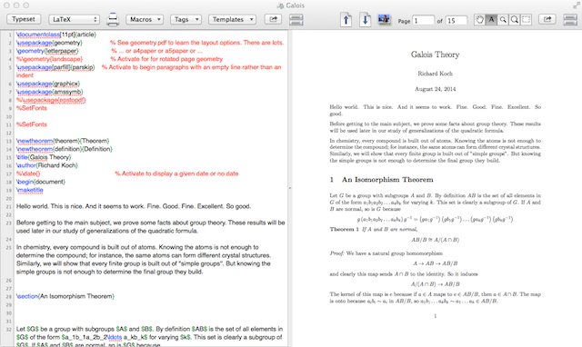

Syntax highlighting
Color-coded TeX commands and comments make your source easier to read.

Originally developed by Richard Koch.
Current development and maintenance: Yusuke Terada

TeXShop is a TeX document editor for the Mac that makes editing TeX documents and previewing PDFs convenient.
Color-coded TeX commands and comments make your source easier to read.
Command completion and macros help you enter frequently used code quickly.
Jump between corresponding locations in your source and PDF to check your edits against the typeset result.
The first release under the new maintainership is being prepared. The application download and supported macOS versions will be listed here when it is ready.
For earlier releases, please visit Richard Koch’s TeXShop website
To typeset documents, install a TeX distribution such as MacTeX
TeXShop was originally developed by Richard Koch and first released in 2000. We thank him and the many contributors, translators, and users who have supported it.
The source repository begins with Richard Koch’s TeXShop 5.58 Golden Gate sources, followed by maintenance changes. Earlier development history is not included.
TeXShop is free software under GPL version 2 or later. Bundled components retain their own licenses.